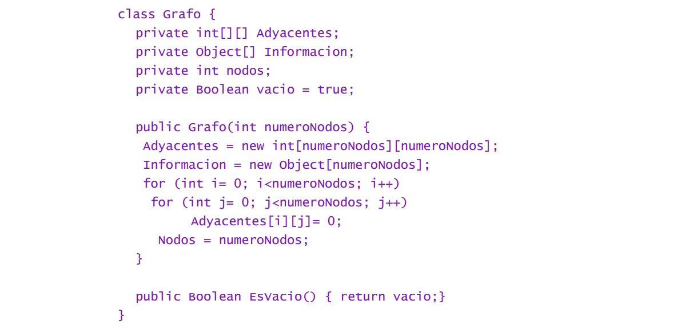

Arboles
Que son los arboles
↬ Es un tipo e abstracción de datos (TAD).
↬ Imita la estructura jerárquica de un árbol.
↬ Valor en la raíz y subárboles.
↬ Nodo padre y nodos hijos.
↬ Posee nodos, vértices y aristas de forma acíclica.
Implementación de árboles:
▻ La clase de árbol se parametriza con un tipo de datos abstracto, ampliamos la clase de colección e implementamos
la interfaz IF.
▻ Lo único que podemos almacenar es la raíz. La raíz es un atributo llamado root de tipo E.
▻ El constucor Tree crea una colección basia llamada super y luego nos muestra la raíz no tiene contenido.
▻ Se devuelve el elemento situado en la raíz del árbol que es root, que devuelve el valor de this.root.
▻ Ahora que sabemos si el árbol es una hoja se puede hacer lo mismo independientemente en todos los árboles
independientemente de su estructura comprobamos si la raíz está presente y el número de hijos es 0.
Arboles Binarios
⩺ Es una estructura de datos en la cual cada nodo posee un hijo izquierdo o derecho.
⩺ No puede tener mas de dos hijos.
⩺ Si un hijo tiene como referencia null (no tiene dato), se conoce como un nodo externo, en caso contrario el hijo
es llamado interno.
Implementación De Árboles Binarios
La implementación en el árbol binario numérico es comparar números entre mayúsculas y minúsculas, cuando el número es menor que el nodo raíz, tomará el camino de la derecha y se posicionará allí, y viceversa, si el número es mayor, lo hará. elegir el camino correcto. Como en la imagen, cuando ingresa el número 15 y lo compara con el nodo raíz, que es 34 menos que 34, irá a la izquierda y tomará su lugar, ahora podemos ver el número 20 ingresando a través del nodo raíz. más pequeño, va a la izquierda, encuentra 15 y más grande que él, sigue el camino a la derecha y toma su lugar.
Grafos
⪫ Es un conjunto de vértices o nodos unidos a aristas o arcos.
⪫ Permite representar relaciones binarias entre elementos de un conjunto.
⪫ Estudia las interrelaciones entre unidades que interactúan unas con otras.
Implementación De Grafos
La implementación del histograma de puntuación en la clase java representada por la matriz de adyacencia sería la siguiente:
La clase grafo está compuesta de cuatro miembros:
⫸ Adyacente: representa una matriz de adyacencia donde cada celda adyacente [i][j] representará el valor del arco
desde el nodo i hasta el nodo j. Si el valor es 0, suponemos que no hay arco.
⫸ Información: Representa la información accesible a cada nodo.
⫸ Nodos: que indica el número de nodos.
⫸ Vacío: con valor true si el grafo está vacío.
El constructor creará un grafo con un número de nodos igual a numeroNodos. Inicializará la matriz de adyacencia a cero.